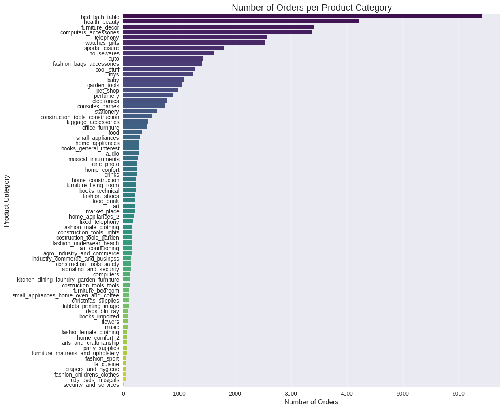
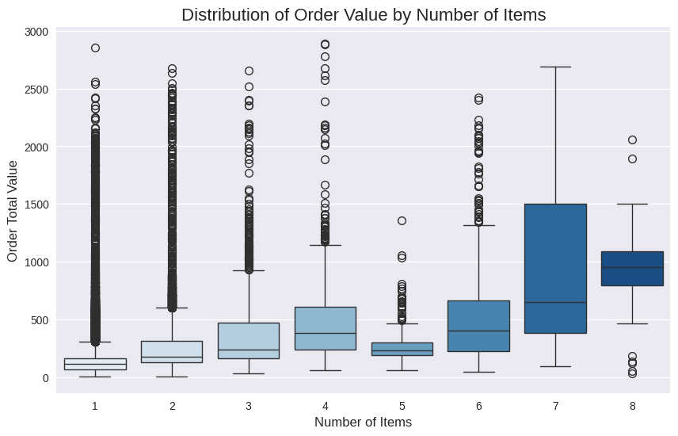

Assignment 1: Data Preprocessing and EDA for E‑Commerce Orders#
This notebook is your working template for Assignment 1.
You will:
Load four tables (
orders,order_items,order_shipping,payments).Join them into a single order-level dataset.
Clean and transform the data.
Perform basic EDA and visualization.
Work top-to-bottom. Complete each sub-part in the order they appear before proceeding.
Submitted by#
Group number on Canvas:
Student ID (AxxxxxxxZ) |
NUSNet ID (exxxxxxx) |
Name (as it appears on Canvas) |
|---|---|---|
Member 1 ID |
Member 1 NUSNet |
Member 1 Name |
Member 2 ID |
Member 2 NUSNet |
Member 2 Name |
Member 3 ID |
Member 3 NUSNet |
Member 3 Name |
Member 4 ID |
Member 4 NUSNet |
Member 4 Name |
Setup#
Run the cell below to import the required Python packages.
import numpy as np
import pandas as pd
import matplotlib.pyplot as plt
import sklearn
import seaborn as sns
plt.style.use('seaborn-v0_8')
Part 1: Data Preprocessing (10 marks)#
1.1 Data Loading & Joining (4 marks)#
We first load each table, inspect it, and then join them into a single DataFrame.
Load the CSV files#
Task:
Dowload the four CSV files from canvas and upload them under the ‘files’ tab for this colab instance
Load the four CSV files using
pd.read_csv()into:df_ordersdf_order_itemsdf_shippingdf_payments
Update the filenames/paths if necessary.
# ANSWER: load the CSV files
df_orders = pd.read_csv('data/orders.csv')
df_order_items = pd.read_csv('data/order_items.csv')
df_shipping = pd.read_csv('data/order_shipping.csv')
df_payments = pd.read_csv('data/payments.csv')
print('All files loaded successfully.')
All files loaded successfully.
Inspect each table#
Task:
For each DataFrame, display:
head()(first 5 rows)shape(rows, columns)
This helps you understand the raw structure before joining.
# ANSWER: inspect the DataFrames
dfs = {
"Orders": df_orders,
"Order Items": df_order_items,
"Shipping": df_shipping,
"Payments": df_payments
}
for name, df in dfs.items():
print(f"--- {name} ---")
print(f"Shape: {df.shape}")
display(df.head())
print("\n")
--- Orders ---
Shape: (100000, 6)
| order_id | order_status | order_purchase_hour | order_purchase_dayofweek | order_purchase_month | order_total_value | |
|---|---|---|---|---|---|---|
| 0 | sdv-id-whzjUX | shipped | 10 | 4 | 4 | 744.312535 |
| 1 | sdv-id-gqShVM | delivered | 19 | 2 | 4 | 1030.521912 |
| 2 | sdv-id-vtaqcY | delivered | 18 | 4 | 8 | 28.472994 |
| 3 | sdv-id-xkqwdo | invoiced | 23 | 1 | 8 | 143.914263 |
| 4 | sdv-id-sGyHvQ | delivered | 19 | 0 | 2 | 16.944537 |
--- Order Items ---
Shape: (100000, 8)
| order_id | num_items | num_unique_products | num_unique_sellers | total_item_price | avg_item_price | total_freight_value | top_product_category | |
|---|---|---|---|---|---|---|---|---|
| 0 | sdv-id-whzjUX | 1 | 1 | 1 | 352.420029 | 369.966521 | 68.790159 | construction_tools_construction |
| 1 | sdv-id-gqShVM | 1 | 1 | 1 | 1580.187928 | 1089.284136 | 84.603289 | auto |
| 2 | sdv-id-vtaqcY | 1 | 1 | 1 | 45.969263 | 36.969754 | 24.022637 | furniture_decor |
| 3 | sdv-id-xkqwdo | 1 | 1 | 1 | 146.023435 | 126.755360 | 16.945349 | consoles_games |
| 4 | sdv-id-sGyHvQ | 1 | 1 | 1 | 30.525812 | 22.797409 | 17.785846 | air_conditioning |
--- Shipping ---
Shape: (100000, 2)
| order_id | customer_state | |
|---|---|---|
| 0 | sdv-id-whzjUX | Massachusetts |
| 1 | sdv-id-gqShVM | Ohio |
| 2 | sdv-id-vtaqcY | Wisconsin |
| 3 | sdv-id-xkqwdo | Michigan |
| 4 | sdv-id-sGyHvQ | Nevada |
--- Payments ---
Shape: (100000, 2)
| order_id | payment_type | |
|---|---|---|
| 0 | sdv-id-whzjUX | voucher |
| 1 | sdv-id-gqShVM | voucher |
| 2 | sdv-id-vtaqcY | voucher |
| 3 | sdv-id-xkqwdo | credit_card |
| 4 | sdv-id-sGyHvQ | credit_card |
Join the tables on order_id to create a single order-level DataFrame#
Task:
Perform inner joins on
order_idso that only orders present in all tables remain.Join order tables in this order:
df_orderswithdf_order_itemsresult with
df_shippingresult with
df_payments
Store the final DataFrame as
df_orders_full.Display
head()andshapefordf_orders_full.
# ANSWER: join the tables
df_merge_1 = pd.merge(df_orders, df_order_items, on='order_id', how='inner')
df_merge_2 = pd.merge(df_merge_1, df_shipping, on='order_id', how='inner')
df_orders_full = pd.merge(df_merge_2, df_payments, on='order_id', how='inner')
print(f"Final Shape of df_orders_full: {df_orders_full.shape}")
display(df_orders_full.head())
Final Shape of df_orders_full: (100000, 15)
| order_id | order_status | order_purchase_hour | order_purchase_dayofweek | order_purchase_month | order_total_value | num_items | num_unique_products | num_unique_sellers | total_item_price | avg_item_price | total_freight_value | top_product_category | customer_state | payment_type | |
|---|---|---|---|---|---|---|---|---|---|---|---|---|---|---|---|
| 0 | sdv-id-whzjUX | shipped | 10 | 4 | 4 | 744.312535 | 1 | 1 | 1 | 352.420029 | 369.966521 | 68.790159 | construction_tools_construction | Massachusetts | voucher |
| 1 | sdv-id-gqShVM | delivered | 19 | 2 | 4 | 1030.521912 | 1 | 1 | 1 | 1580.187928 | 1089.284136 | 84.603289 | auto | Ohio | voucher |
| 2 | sdv-id-vtaqcY | delivered | 18 | 4 | 8 | 28.472994 | 1 | 1 | 1 | 45.969263 | 36.969754 | 24.022637 | furniture_decor | Wisconsin | voucher |
| 3 | sdv-id-xkqwdo | invoiced | 23 | 1 | 8 | 143.914263 | 1 | 1 | 1 | 146.023435 | 126.755360 | 16.945349 | consoles_games | Michigan | credit_card |
| 4 | sdv-id-sGyHvQ | delivered | 19 | 0 | 2 | 16.944537 | 1 | 1 | 1 | 30.525812 | 22.797409 | 17.785846 | air_conditioning | Nevada | credit_card |
1.2 Data Cleaning (3 marks)#
We now clean df_orders_full so it is ready for analysis.
Handle missing values#
Task:
For numerical columns: replace missing values with the median of that column.
For categorical columns: replace missing values with the mode (most frequent value).
Drop any rows where
order_idorpayment_typeis missing (if any remain)
Work directly on df_orders_full.
from numpy._core import numeric
# ANSWER: Handle missing values
# Separate numeric and categorical columns
numeric_cols = df_orders_full.select_dtypes(include=np.number).columns
categorical_cols = df_orders_full.select_dtypes(exclude=np.number).columns
# Fill numeric columns with Median
for col in numeric_cols:
median_val = df_orders_full[col].median()
df_orders_full[col] = df_orders_full[col].fillna(median_val)
# Fill categorical columns with Mode
for col in categorical_cols:
if not df_orders_full[col].mode().empty:
mode_val = df_orders_full[col].mode()[0]
df_orders_full[col] = df_orders_full[col].fillna(mode_val)
# Drop rows where specific critical columns are still missing
df_orders_full.dropna(subset=['order_id', 'payment_type'], inplace=True)
print("Missing values handled.")
Missing values handled.
Remove clearly invalid numeric records#
Task:
Remove rows where:
num_items≤ 0, ororder_total_value≤ 0, ortotal_item_price< 0, ortotal_freight_value< 0.
# ANSWER: filter invalid numeric records
condition = (
(df_orders_full['num_items'] > 0) &
(df_orders_full['order_total_value'] > 0) &
(df_orders_full['total_item_price'] >= 0) &
(df_orders_full['total_freight_value'] >= 0)
)
# Apply the filter
df_orders_full = df_orders_full[condition]
print("Invalid records removed.")
print(f"Shape after filtering invalid records: {df_orders_full.shape}")
Invalid records removed.
Shape after filtering invalid records: (89175, 15)
Check cleanliness and key uniqueness#
Task:
Confirm there are no null values in
df_orders_full.Check that
order_idis unique (one row per order).
# ANSWER: final cleaning checks
# Confirm no null values
total_nulls = df_orders_full.isnull().sum().sum()
print(f"Total null values remaining: {total_nulls}")
# Check that order_id is unique
is_unique = df_orders_full['order_id'].is_unique
print(f"Is order_id unique? {is_unique}")
Total null values remaining: 0
Is order_id unique? True
1.3 Data Transformation (3 marks)#
Next, we perform sanity checks and create new features that will be useful later.
Sanity checks on counts and values#
Task:
Keep only rows where both:
num_items≥num_unique_products,order_total_value≥total_item_price + total_freight_value
# ANSWER: apply sanity checks
# condition 1: Total items count must be >= count of unique products
cond_items = df_orders_full['num_items'] >= df_orders_full['num_unique_products']
# condition 2: Total order value must be >= total item price + total freight value
cond_value = df_orders_full['order_total_value'] >= (df_orders_full['total_item_price'] + df_orders_full['total_freight_value'])
# Apply both conditions，keep rows that satisfy both conditions
df_orders_full = df_orders_full[cond_items & cond_value]
print(f"Shape after sanity checks: {df_orders_full.shape}")
Shape after sanity checks: (46287, 15)
Create order_value_per_item#
Task:
Create a new column
order_value_per_itemdefined astotal_item_price / num_items.
# ANSWER: create order_value_per_item
# Calculate value per item
df_orders_full['order_value_per_item'] = df_orders_full['total_item_price'] / df_orders_full['num_items']
# Display the first few rows to verify
display(df_orders_full[['total_item_price', 'num_items', 'order_value_per_item']].head())
| total_item_price | num_items | order_value_per_item | |
|---|---|---|---|
| 0 | 352.420029 | 1 | 352.420029 |
| 5 | 289.242639 | 1 | 289.242639 |
| 8 | 26.893468 | 1 | 26.893468 |
| 12 | 37.790896 | 1 | 37.790896 |
| 14 | 169.528323 | 3 | 56.509441 |
Create order_size_category#
Task:
Create a new categorical column
order_size_categorywith values:“Small” if
num_items≤ 2“Medium” if
num_items≤ 5“Large” if
num_items> 5
# ANSWER: create order_size_category
def order_size_category(num_items):
if num_items <= 2:
return 'Small'
elif num_items <= 5:
return 'Medium'
else:
return 'Large'
df_orders_full['order_size_category'] = df_orders_full['num_items'].apply(order_size_category)
# Verify the distribution of categories
print(df_orders_full['order_size_category'].value_counts())
order_size_category
Small 40026
Medium 4543
Large 1718
Name: count, dtype: int64
Final transformation check#
Task:
Confirm there are no null values in
df_orders_full.Display:
head()shapeinfo()
# ANSWER: final transformation summary
# 1. Confirm no null values
print(f"Any nulls left? {df_orders_full.isnull().values.any()}")
# 2. Display summary
display(df_orders_full.head())
print(f"\nFinal Shape: {df_orders_full.shape}")
print("\n")
df_orders_full.info()
Any nulls left? False
| order_id | order_status | order_purchase_hour | order_purchase_dayofweek | order_purchase_month | order_total_value | num_items | num_unique_products | num_unique_sellers | total_item_price | avg_item_price | total_freight_value | top_product_category | customer_state | payment_type | order_value_per_item | order_size_category | |
|---|---|---|---|---|---|---|---|---|---|---|---|---|---|---|---|---|---|
| 0 | sdv-id-whzjUX | shipped | 10 | 4 | 4 | 744.312535 | 1 | 1 | 1 | 352.420029 | 369.966521 | 68.790159 | construction_tools_construction | Massachusetts | voucher | 352.420029 | Small |
| 5 | sdv-id-dbopoJ | delivered | 19 | 2 | 3 | 1556.667902 | 1 | 1 | 1 | 289.242639 | 1354.621410 | 15.394619 | health_beauty | Vermont | credit_card | 289.242639 | Small |
| 8 | sdv-id-FSEOvM | delivered | 15 | 4 | 8 | 62.060506 | 1 | 1 | 1 | 26.893468 | 48.485654 | 18.751282 | luggage_accessories | South Carolina | debit_card | 26.893468 | Small |
| 12 | sdv-id-bQcBUR | delivered | 21 | 0 | 8 | 73.873470 | 1 | 1 | 1 | 37.790896 | 75.704909 | 8.670875 | computers_accessories | Kentucky | credit_card | 37.790896 | Small |
| 14 | sdv-id-MPxIXB | delivered | 13 | 5 | 5 | 361.961537 | 3 | 3 | 3 | 169.528323 | 50.132979 | 34.731146 | pet_shop | Missouri | voucher | 56.509441 | Medium |
Final Shape: (46287, 17)
<class 'pandas.core.frame.DataFrame'>
Index: 46287 entries, 0 to 99997
Data columns (total 17 columns):
# Column Non-Null Count Dtype
--- ------ -------------- -----
0 order_id 46287 non-null object
1 order_status 46287 non-null object
2 order_purchase_hour 46287 non-null int64
3 order_purchase_dayofweek 46287 non-null int64
4 order_purchase_month 46287 non-null int64
5 order_total_value 46287 non-null float64
6 num_items 46287 non-null int64
7 num_unique_products 46287 non-null int64
8 num_unique_sellers 46287 non-null int64
9 total_item_price 46287 non-null float64
10 avg_item_price 46287 non-null float64
11 total_freight_value 46287 non-null float64
12 top_product_category 46287 non-null object
13 customer_state 46287 non-null object
14 payment_type 46287 non-null object
15 order_value_per_item 46287 non-null float64
16 order_size_category 46287 non-null object
dtypes: float64(5), int64(6), object(6)
memory usage: 6.4+ MB
1.4 Data Storage#
We now save the cleaned, joined, and transformed dataset.
1.4A Save cleaned dataset#
Task:
Save
df_orders_fullasecommerce_orders_cleaned.csv(without the index).
# ANSWER: save to CSV
# Save the dataframe to a CSV file, excluding the index
df_orders_full.to_csv('ecommerce_orders_cleaned.csv', index=False)
print("File 'ecommerce_orders_cleaned.csv' saved successfully.")
File 'ecommerce_orders_cleaned.csv' saved successfully.
Part 2: EDA & Data Visualization (4 marks)#
We now reload the cleaned dataset and explore it.
2.0 Load Transformed Dataset#
2.0 Reload CSV#
Task:
Load
ecommerce_orders_cleaned.csvintodf_orders_cleaned.Display
head()andshape.
# ANSWER: load cleaned dataset
df_orders_cleaned = pd.read_csv('ecommerce_orders_cleaned.csv')
print(f"Shape of df_orders_cleaned: {df_orders_cleaned.shape}")
display(df_orders_cleaned.head())
Shape of df_orders_cleaned: (46287, 17)
| order_id | order_status | order_purchase_hour | order_purchase_dayofweek | order_purchase_month | order_total_value | num_items | num_unique_products | num_unique_sellers | total_item_price | avg_item_price | total_freight_value | top_product_category | customer_state | payment_type | order_value_per_item | order_size_category | |
|---|---|---|---|---|---|---|---|---|---|---|---|---|---|---|---|---|---|
| 0 | sdv-id-whzjUX | shipped | 10 | 4 | 4 | 744.312535 | 1 | 1 | 1 | 352.420029 | 369.966521 | 68.790159 | construction_tools_construction | Massachusetts | voucher | 352.420029 | Small |
| 1 | sdv-id-dbopoJ | delivered | 19 | 2 | 3 | 1556.667902 | 1 | 1 | 1 | 289.242639 | 1354.621410 | 15.394619 | health_beauty | Vermont | credit_card | 289.242639 | Small |
| 2 | sdv-id-FSEOvM | delivered | 15 | 4 | 8 | 62.060506 | 1 | 1 | 1 | 26.893468 | 48.485654 | 18.751282 | luggage_accessories | South Carolina | debit_card | 26.893468 | Small |
| 3 | sdv-id-bQcBUR | delivered | 21 | 0 | 8 | 73.873470 | 1 | 1 | 1 | 37.790896 | 75.704909 | 8.670875 | computers_accessories | Kentucky | credit_card | 37.790896 | Small |
| 4 | sdv-id-MPxIXB | delivered | 13 | 5 | 5 | 361.961537 | 3 | 3 | 3 | 169.528323 | 50.132979 | 34.731146 | pet_shop | Missouri | voucher | 56.509441 | Medium |
2.1 Unique Categories and Payment Types (1 mark)#
Task:
Compute the number of unique values in
top_product_categoryandpayment_type.Display:
The top 5 product categories by order count.
The top 3 payment types by order count.
# ANSWER: unique counts and top values
# Compute number of unique values
unique_cat = df_orders_cleaned['top_product_category'].nunique()
unique_payment = df_orders_cleaned['payment_type'].nunique()
print(f"Number of unique product categories: {unique_cat}")
print(f"Number of unique payment types: {unique_payment}")
print('\n')
print("Top 5 Product Categories:")
print(df_orders_cleaned['top_product_category'].value_counts().head(5))
print('\n')
print("Top 3 Payment Types:")
print(df_orders_cleaned['payment_type'].value_counts().head(3))
Number of unique product categories: 71
Number of unique payment types: 5
Top 5 Product Categories:
top_product_category
bed_bath_table 6419
health_beauty 4208
furniture_decor 3413
computers_accessories 3386
telephony 2570
Name: count, dtype: int64
Top 3 Payment Types:
payment_type
credit_card 27987
voucher 13812
points 2532
Name: count, dtype: int64
2.2 Bar Chart of Orders by Product Category (2 marks)#
Create bar chart#
Task:
Create a bar chart of number of orders per
top_product_category, sorted in descending order.Add a clear title and axis labels.
# ANSWER: bar chart of product categories
# Calculate counts for each category and sort them
cat_counts = df_orders_cleaned['top_product_category'].value_counts().reset_index()
cat_counts.columns = ['top_product_category', 'count']
# Create the plot
plt.figure(figsize=(12, 12)) # Make the figure wide enough
sns.barplot(data=cat_counts, x='count', y='top_product_category', palette='viridis')
# Add labels and title
plt.title('Number of Orders per Product Category', fontsize=16)
plt.xlabel('Number of Orders', fontsize=12)
plt.ylabel('Product Category', fontsize=12)
plt.show()
/tmp/ipykernel_2376/2921509209.py:8: FutureWarning:
Passing `palette` without assigning `hue` is deprecated and will be removed in v0.14.0. Assign the `y` variable to `hue` and set `legend=False` for the same effect.
sns.barplot(data=cat_counts, x='count', y='top_product_category', palette='viridis')

Brief interpretation#
Task:
In 2–3 sentences, describe any trends you see (e.g., which categories dominate, whether the distribution is skewed, etc.).
Write your observations here.
The bar chart shows that bed_bath_table and health_beauty are the most popular product categories, accounting for a significant portion of the orders. The distribution is skewed, with a few top categories dominating the sales, while many other categories have relatively low order counts.
2.3 Box Plot: Order Value vs Number of Items (2 mark)#
Create box plot#
Task:
Create a box plot with:
X‑axis:
num_itemsY‑axis:
order_total_value
Add a clear title and axis labels.
# ANSWER: box plot order_total_value vs num_items
plt.figure(figsize=(10, 6))
# Create Box Plot
sns.boxplot(data=df_orders_cleaned, x='num_items', y='order_total_value', palette='Blues')
# Add labels and title
plt.title('Distribution of Order Value by Number of Items', fontsize=16)
plt.xlabel('Number of Items', fontsize=12)
plt.ylabel('Order Total Value', fontsize=12)
plt.show()
/tmp/ipykernel_2376/3749998017.py:5: FutureWarning:
Passing `palette` without assigning `hue` is deprecated and will be removed in v0.14.0. Assign the `x` variable to `hue` and set `legend=False` for the same effect.
sns.boxplot(data=df_orders_cleaned, x='num_items', y='order_total_value', palette='Blues')

Brief interpretation#
Task:
In 2–3 sentences, describe how order value changes as the number of items increases (e.g., linear trend, diminishing returns, many outliers, etc.).
Write your observations here.
The median order total value increases as the number of items increases. However, the spread of order values also becomes larger for higher item counts. There are several outliers, particularly for orders with a small number of items, indicating some high-value single purchases.